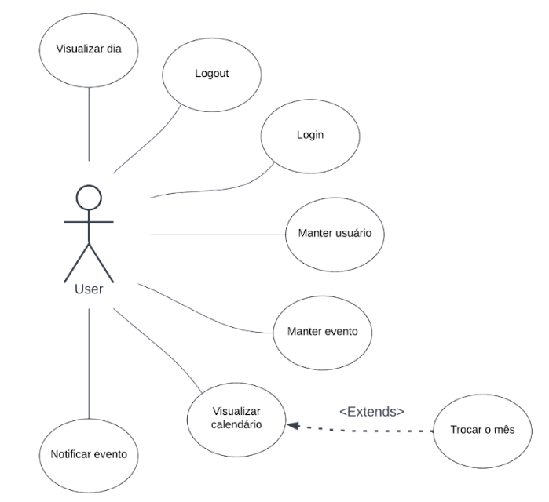

Os diagramas de caso de uso são uma ótima ferramenta que pode ajudar empresas e desenvolvedores a projetar processos e sistemas. Eles garantem o desenvolvimento de sistemas corretos e eficientes que atenderão adequadamente aos seus objetivos ao capturar os requisitos e expectativas do ponto de vista do usuário.
